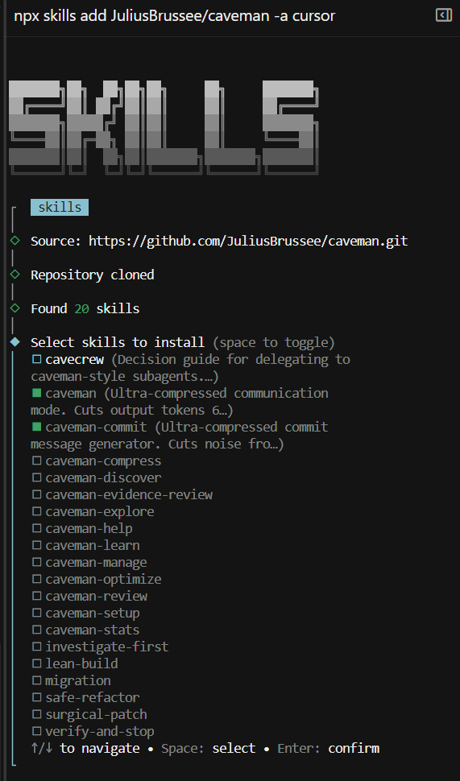

Ever ask Cursor something simple and get back a 3-paragraph essay? Caveman is a free Cursor skill that strips the filler — no "let me explain," no restating your question, no walkthrough you didn't ask for. Just the answer. Code quality is untouched; only the wording around it shrinks.
Example — "What is a closure in JavaScript?"
Without Caveman:
A closure is a function that remembers variables from its outer scope, even after that outer function has finished executing...With /caveman full:
Fn + remembered outer vars, even after outer fn returns.Their own benchmarks show up to ~65% fewer output tokens in full mode — faster replies, less scrolling.

1.
Install
npx skills add JuliusBrussee/caveman -a cursor
2.
Verify
npx skills list
3.
Use it
/caveman fullRequires Node.js. Run install commands in a terminal (PowerShell or Command Prompt), not in the Cursor chat. If Cursor does not pick up the skill, reinstall with -g: npx skills add JuliusBrussee/caveman -a cursor -g --skill caveman